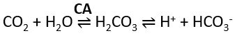

- Respiratory Acid-Base Balance
- Respiratory acidosis
- Caused by hypoventilation – CNS depression, neuromuscular disorders, chest wall restriction, pulmonary tissue disease, airway obstruction.
- Accumulation of CO2 in the tissues PCO2 in blood pH in blood
- Respiratory alkalosis
- Caused by hyperventilation – CNS disease, acute asthma, hypoxemia.
- Excessive loss of CO2 PCO2 pH in blood
- Where is the H+ when CO2 is exhaled?
